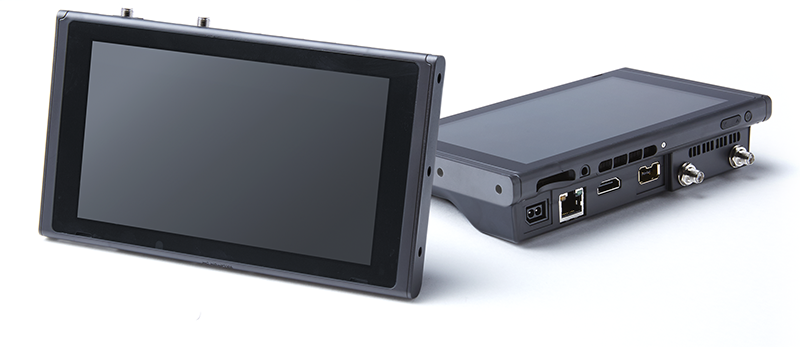
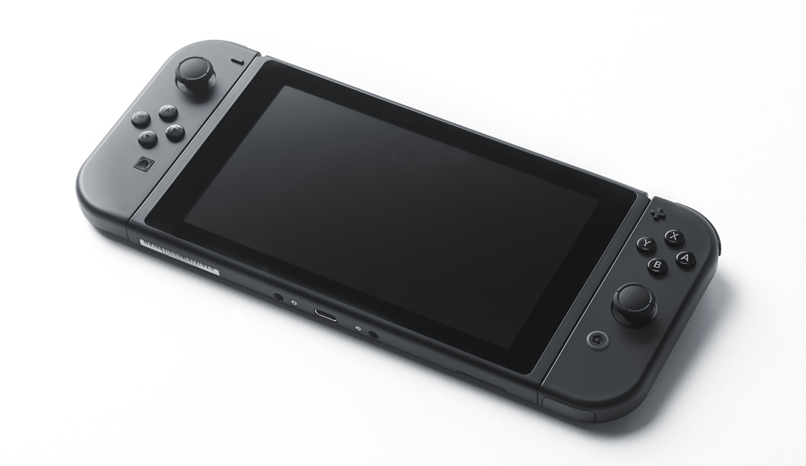

This section introduces the development hardware and software used for NX application development.
There are two types of development hardware: the SDEV, with its advanced features, and the EDEV, in a format that more closely resembles a production device. As indicated in the following descriptions, their characteristics and features differ, allowing you to choose the equipment that includes the features that most meet your development needs.
SDEV is a device with advanced features, including many external interfaces that are useful for development but not found in the product. The SDEV motherboard has a built-in, dedicated PCB for adding extra features, making the SDEV larger than the EDEV.
The SDEV is equipped with an HDMI output port and a debug controller connection port, and connects to the PC by a wired Ethernet connection. However, it has no built-in battery, so when running it, power must be supplied via an AC adapter.
For more information about the SDEV, see the SDEV Operations Manual.

The EDEV is development hardware that resembles the retail device. EDEV offers fewer debugging features than SDEV, but you can develop an entire application using only EDEV.
The EDEV looks like a retail device and has a built-in battery. It allows you to test applications in a cable-free environment.
For more information about the EDEV, see the EDEV Operations Manual.

NX development cards are NX game cards that can be used on development hardware. The NX development card capacity is 32 GB.
The main features of SDEV and EDEV are as follows.
O --- Supported X --- Not Supported
| SDEV | EDEV | (For Reference) NX Full Retail Unit | |
|---|---|---|---|
| Shape | The back is thicker than the back of the retail unit. | Identical to the retail unit. | － |
| Main memory | 4 GB LPDDR4 | 4 GB LPDDR4 | 4 GB LPDDR4 |
| System memory | 64 GB eMMC | 64 GB eMMC | 32 GB eMMC |
| NX Game Cards | Can read or write NX development cards. | Can read or write NX development cards. | Can read or write retail unit NX game cards. |
| Connecting to a PC | Ethernet (1 GB) | USB 3.0 (Requires a separate external device.) | × |
| Control the NX hardware from a PC | 〇 | × | × |
| Uses debug controller |
Wii Classic Controller Pro Supports retail device |
× | × |
| HDMI capture of handheld mode (LCD screen) | 〇 | × | × |
To develop NX applications, use NintendoSDK (the standardized development environment for the Nintendo platform) and an expansion module for the NX.
For more information, see the NintendoSDK documentation.
This section describes the game engines available on the NX system.
Unreal Engine 4 (UE4) is a game engine developed by Epic Games. It contains all of the features required for game development and provides a toolset that enables high-quality game experiences.
UE4 contains not only high-level graphics power, but also several features that represent a major evolution for the development environment. These features include Blueprint, a visual scripting system that allows you to create games without using any code; Cascade, which can freely manipulate millions of particles to create realistic flame and smoke; and Content Browser, which provides functional asset management.
UE4 is also upgraded for free by Epic Games every few months, and they are constantly adding new features, improvements, and bug fixes. The NX version will include these latest revisions, and will be optimized so that you can create games while taking full advantage of the hardware performance. Note that there may be restrictions on available functionality, depending on NX performance.
You must obtain a license for UE4 from Epic Games.
CONFIDENTIAL